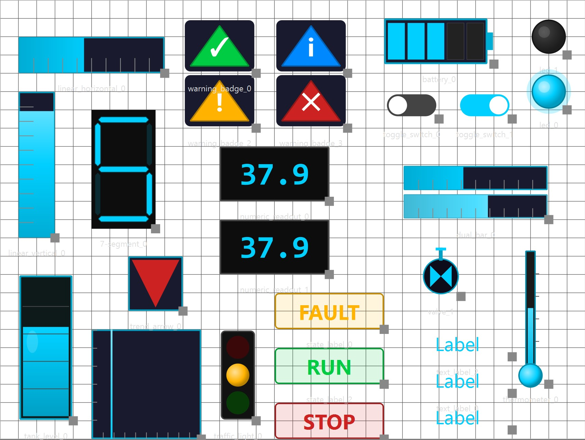
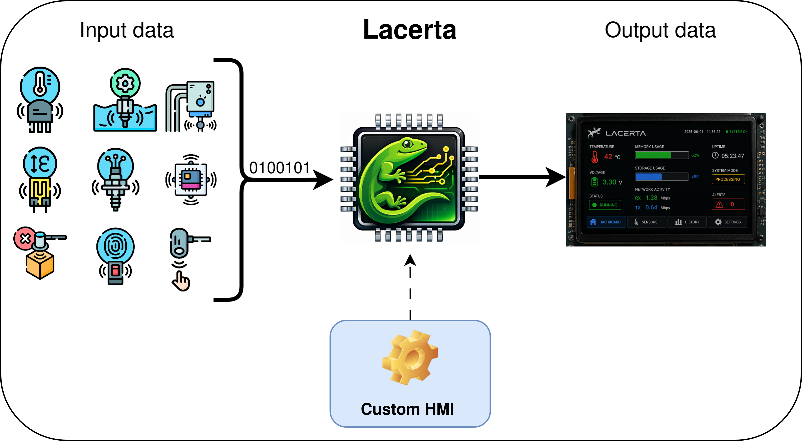

Lacerta: Open Hardware Interface Engine for Embedded Systems
Project Overview
Lacerta is an open-source hardware platform that enables the rapid creation of graphical interfaces for embedded systems.
The system allows developers to design graphical interfaces using a graphical configuration tool and deploy them directly to hardware implemented in a custom ASIC integrated with the Caravel SoC platform. The hardware renders the interface in real time and outputs the result to SPI-driven TFT/OLED screens commonly used in embedded devices.
The generated interface may include visual components such as:
- Buttons
- Horizontal and vertical bars
- Numeric indicators
- Status indicators

Figure 1. Examples of graphical components supported by Lacerta, including buttons, horizontal and vertical bars, numeric indicators, graphics, and status indicators used to visualize real-time system data.
The ASIC receives information via UART streams and supports two main modes of operation for updating the display:
-
Direct Mode: Data received via UART is sent directly to the user project area. In this mode, the values are updated on the SPI TFT/OLED screen with minimal latency, ideal for simple or time-critical updates.
-
Processing Mode: Data from UART is first routed to the integrated RISC-V core, where any mathematical operations, functions, or custom logic can be applied. After processing, the results are sent to the user project area to update the display. This mode is suitable for applications requiring data manipulation or more complex interface logic.
This flexible architecture allows Lacerta to efficiently manage multiple inputs and screen objects using a single UART protocol, adapting to both straightforward and advanced use cases. Any other signal types must be converted to UART beforehand by external interface circuitry or preprocessing devices.

Figure 2. Lacerta system concept: signals are processed by the Lacerta ASIC to generate the custom graphical HMI displayed on SPI-driven TFT/OLED displays for compact embedded installations.
The goal of Lacerta is to provide a low-cost, fully open-source reference architecture for embedded human–machine interfaces (HMI). By combining configurable hardware graphics generation with flexible input interfaces, Lacerta enables the rapid development of customizable dashboards and monitoring systems for industrial, commercial, and edge-IoT applications.